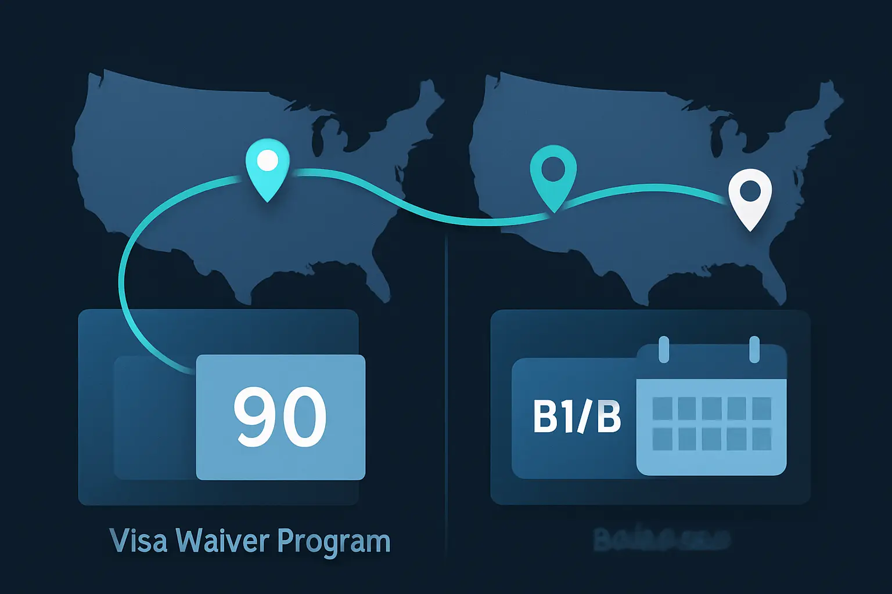

US B1/B2 Visa: Understanding the 180-Day Stay Limit
A practical explainer of what the U.S. visitor-visa "180-day limit" shorthand usually means, where it misleads, and how visa validity, admission, and authorized stay differ.
Last verified: March 2026
What This Page Explains
This page explains the mental model behind the U.S. B1/B2 "180-day stay limit" shorthand for people trying to understand what a visitor visa really does and does not promise.
- what people usually mean when they say a B1/B2 visitor can stay for 180 days
- why that shorthand is useful but incomplete
- how visa validity differs from the period of authorized stay
- why repeated visits and long stays are easy to oversimplify
- where this explainer stops and where official U.S. records and guidance matter more
It is not case-specific immigration advice, and it does not tell you what CBP will do at your next entry.
The main distinction: a B1/B2 visa lets you travel to a U.S. port of entry and ask for admission. It does not, by itself, guarantee admission or fix one universal maximum stay for every trip.
What the "180-Day Limit" Shorthand Usually Means
When people talk about a U.S. B1/B2 "180-day limit," they usually mean the idea that a visitor may be admitted for a period of up to about six months on a given entry.
That shorthand is useful because it points people in roughly the right direction: a B1/B2 visitor is often thinking in terms of a temporary stay measured in months, not in a Schengen-style rolling 90/180 framework. But it is still only shorthand.
It does not mean that every B1/B2 holder automatically receives 180 days, that six months is guaranteed on every arrival, or that there is one simple annual counter that resets itself after departure.
Why the Shorthand Is Incomplete
The U.S. system separates three things that travelers often collapse into one:
- the visa, which lets you travel to a port of entry and request admission
- the admission decision, which CBP makes each time you arrive
- the authorized stay, which is the period you are actually allowed to remain after that admission
That is why "I have a B1/B2 visa" is not the same thing as "I can stay for 180 days." The travel document and the period you are authorized to remain are related, but they are not the same legal step.
Visa Validity vs. Period of Authorized Stay

U.S. State Department guidance is explicit on this point: the visa expiration date is not the same thing as how long you are authorized to remain in the United States.
- Visa validity is the period during which the visa can be used to travel to a U.S. port of entry and request admission.
- Authorized stay is the period CBP gives you for that specific visit when you are admitted.
- The I-94 record matters. The admitted-until date on your admission record is the official reference point for how long you are authorized to stay.
This is why a visa that is valid for several years does not mean you may remain in the United States for several years at a time. It means you may be able to make repeated trips for the same temporary purpose while the visa remains valid, subject to inspection and admission each time.
Repeated Visits and Long-Stay Patterns at a High Level
The easiest mistake after learning the "six months" shorthand is to assume that leaving the United States automatically resets another full stay on demand. That is not a safe mental model.
There is no general published rule that a B1/B2 visitor gets a guaranteed fresh six months after every departure. Each entry is a new admission decision, and the visitor classification is still built around a temporary visit with an intent to depart after that trip.
At a high level, repeated long stays, back-to-back trips, or a pattern that starts to look more like residence than visiting can create more questions at the border or in later visa processing. That does not mean there is one simple numeric cut-off for "too many visits." It means pattern matters, and casual shorthand stops being enough.
Practical Caution and Official-Guidance Boundary
This page is a general explainer, not a substitute for official U.S. records or case-specific immigration advice.
- For visa meaning and admission basics, start with the State Department's What the Visa Expiration Date Means page.
- For visitor-visa purpose and temporary-visit framing, use the State Department's Visitor Visa guidance.
- For your admitted-until date, check the official I-94 record.
- If you need to stay longer than your current admission allows, review USCIS Extend Your Stay guidance before that period expires.
The official record for your stay is not your memory of what "usually happens." It is the admission decision and the record attached to that entry.
The safe approach: do not plan around the assumption that a B1/B2 visa guarantees six months on every trip, and do not treat the visa expiration date as the date that controls how long you may remain in the United States.
When Manual Tracking Starts to Break Down
Manual tracking is manageable when you have one obvious U.S. trip and one clear admitted-until date. It becomes unreliable when you have:
- multiple U.S. entries in the same year
- different stay lengths across different admissions
- the need to compare actual departures with what your I-94 allowed
- overlapping U.S. visitor questions and tax-residence questions
At that point, the problem is less about one headline number and more about maintaining a clean record of entries, exits, and authorized stays that you can review later.
How AtlasDays Helps
AtlasDays is useful once repeated U.S. visits stop feeling like isolated trips and start becoming a record-keeping problem.
It does not replace CBP, State Department, or USCIS guidance. It gives you one dated travel record so you can review repeated entries and stay patterns without rebuilding the timeline from memory. If you want the operational setup step inside the app, use Help Center: Trackers and Limits.
When repeated U.S. visits stop feeling simple
AtlasDays keeps a dated travel record so you do not have to reconstruct the same U.S. entry and stay timeline every time the question comes up again.
Get AtlasDays on the App Store